Twisted Pair Cable
Twisted Pair Cable = Copper wires twisted together to reduce interference
1️⃣ Twisted Pair Cable (MOST COMMON)
A twisted pair cable is made of pairs of copper wires twisted together.
Twisted Pair Cable Structure
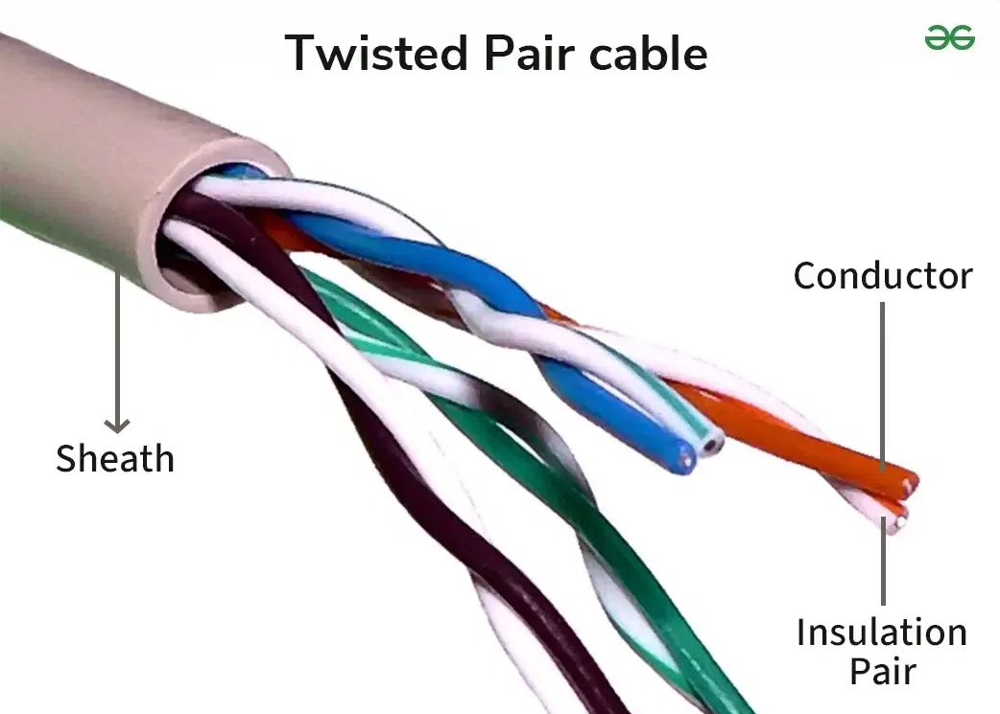
🔹 Types of Twisted Pair
| Type | Full Form | Shielding | Use |
|---|---|---|---|
| UTP | Unshielded Twisted Pair | ❌ No | Home, office LAN |
| STP | Shielded Twisted Pair | ✅ Yes | High-interference areas |
UTP vs STP Cable
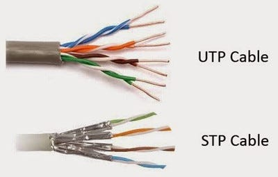
🔹 Categories of Twisted Pair (VERY IMPORTANT)
| Category | Speed | Distance |
|---|---|---|
| Cat5 | 100 Mbps | 100 m |
| Cat5e | 1 Gbps | 100 m |
| Cat6 | 1–10 Gbps | 100 m |
| Cat6a | 10 Gbps | 100 m |
| Cat7 | 10+ Gbps | 100 m |
✅ Cat6 / Cat6a
🔹 Where Twisted Pair is Used
- PC ↔ Switch
- Router ↔ Switch
- LAN networks
- Ethernet connections
🔹 Pros & Cons
- Cheap
- Easy to install
- Flexible
- Limited distance (100 m)
- Interference (especially UTP)
Twisted pair = LAN cable
Cat6 = modern standard
STP = better against interference
Coaxial Cable
Coaxial Cable = Single copper core with heavy shielding for noise protection
2️⃣ Coaxial Cable (OLD BUT IMPORTANT)
A coaxial cable consists of a single copper core surrounded by insulation and shielding.
Coaxial Cable Structure
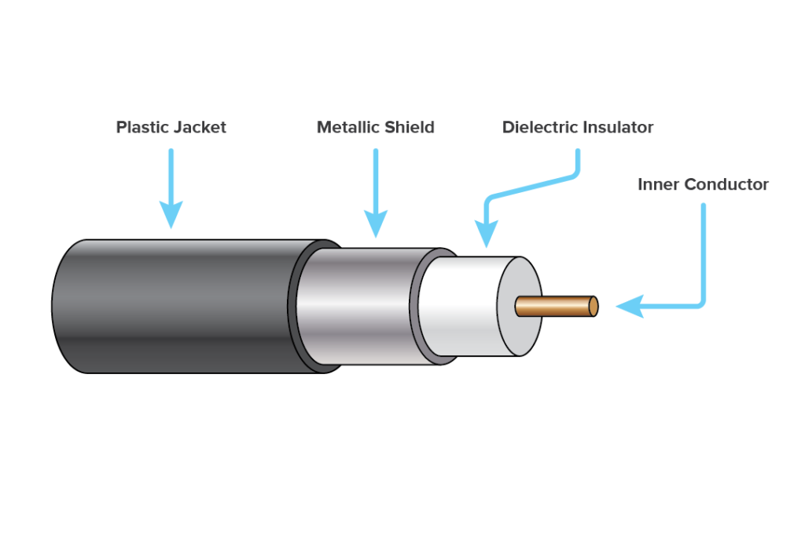
🔹 Structure of Coaxial Cable
- Copper core – carries the signal
- Insulator – separates core and shield
- Metal shield – blocks interference
- Outer jacket – physical protection
Coaxial Cable with Connectors
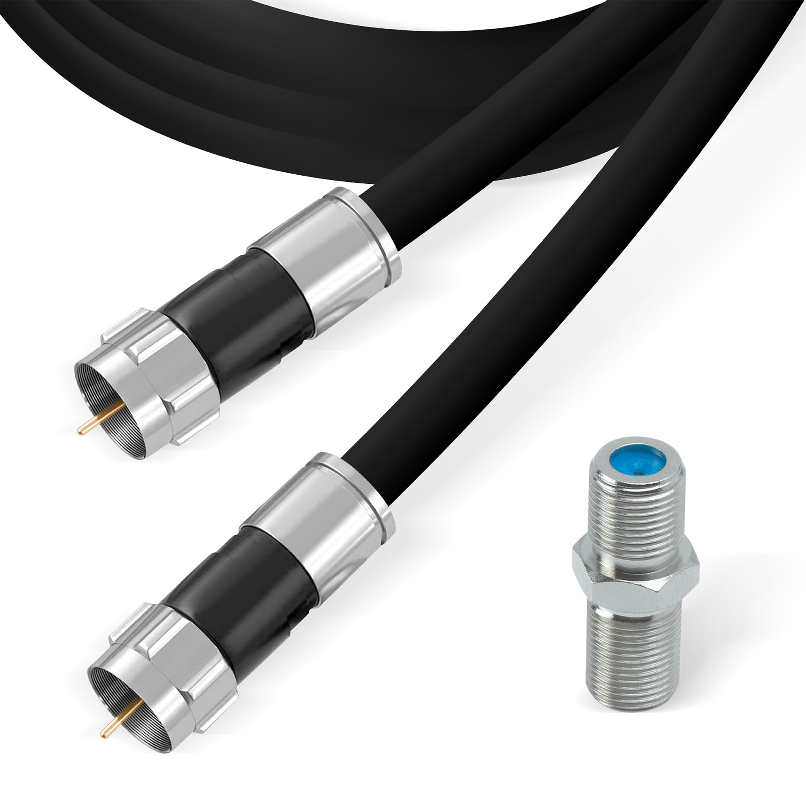
🔹 Where Coaxial Cable is Used
- Cable TV
- Old Ethernet (10Base2, 10Base5)
- CCTV cameras
- Broadband cable internet
Coaxial Cable Examples
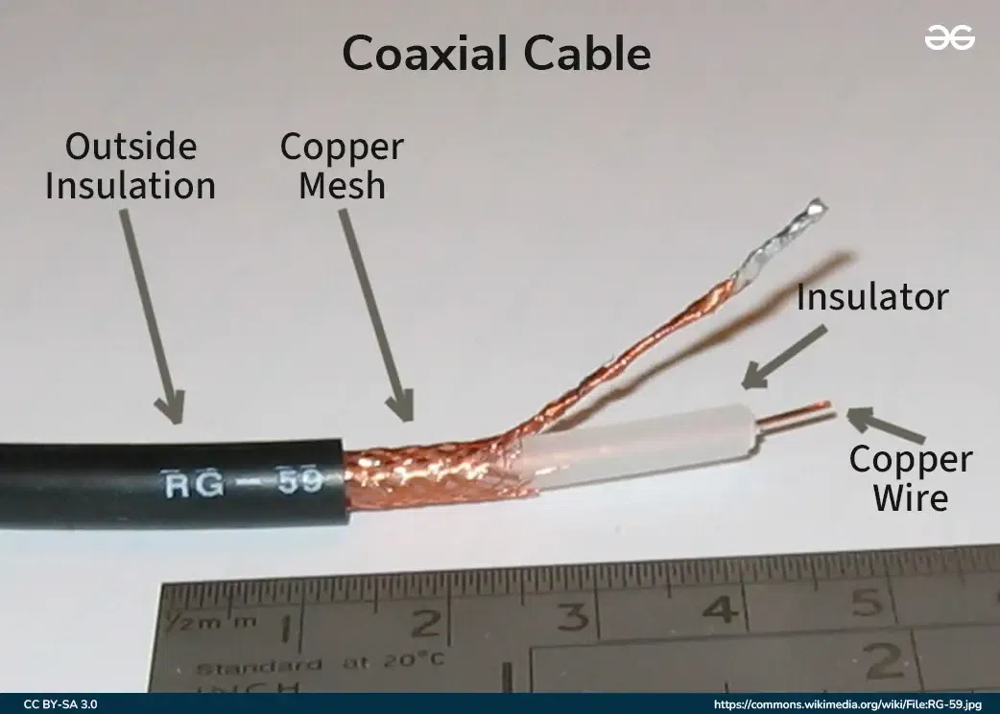
Coaxial Network Connectors
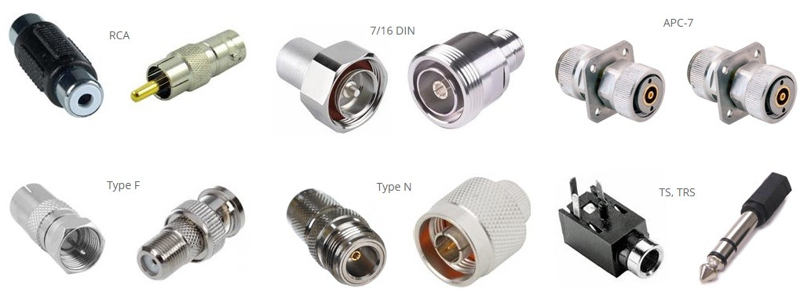
🔹 Pros & Cons
- Better noise resistance than twisted pair
- Strong and stable signal
- Bulky
- Expensive
- Not flexible
- Mostly replaced by Ethernet & fiber
Coaxial = Cable TV cable
Strong shielding = less noise
Old Ethernet used coax
Fiber Optic Cable
Fiber Optic Cable = Uses light instead of electricity for data transmission
3️⃣ Fiber Optic Cable (FASTEST & FUTURE)
A fiber optic cable transmits data using light signals (laser or LED) instead of electrical signals.
👉 This makes fiber extremely fast and reliable
Fiber Optic Cable Anatomy
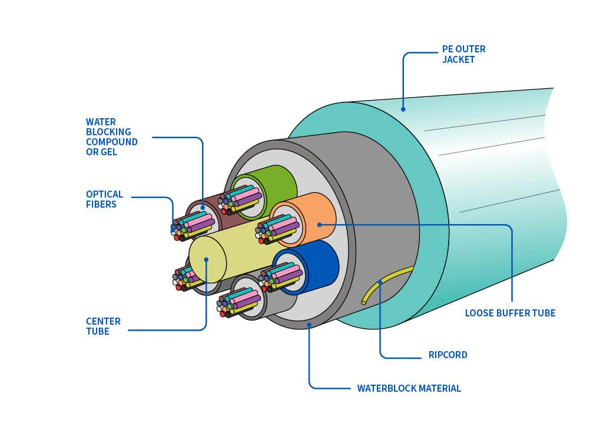
Fiber Optic Cable Components
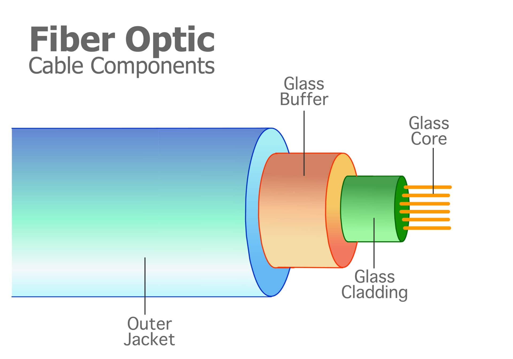
🔹 Types of Fiber Optic Cable
| Type | Core Size | Distance | Use |
|---|---|---|---|
| Single-Mode (SMF) | Thin | 100+ km | ISP, Internet backbone |
| Multi-Mode (MMF) | Thick | ≤ 2 km | Data centers |
Single-Mode vs Multi-Mode Fiber
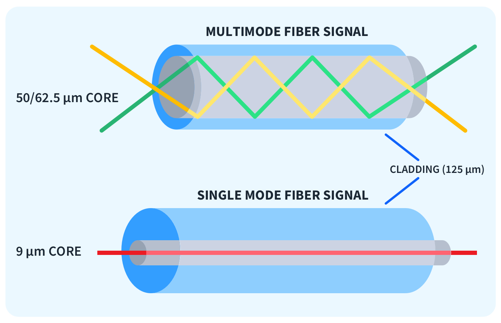
🔹 Where Fiber Optic Cable is Used
- Internet backbone
- ISPs
- Data centers
- Long-distance networks
Fiber Optic Cable Example
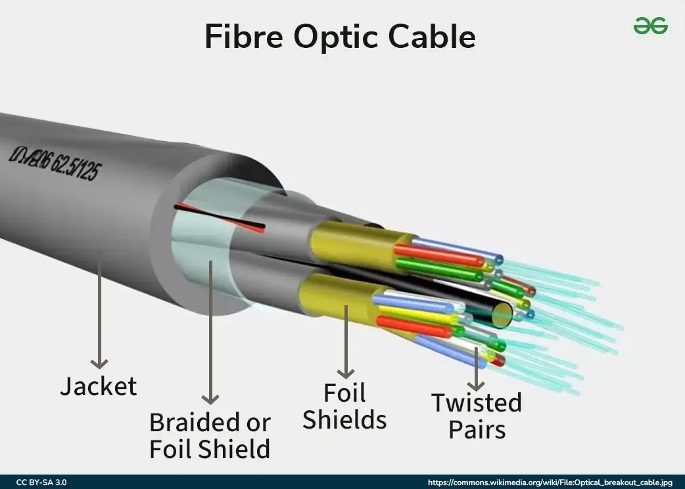
🔹 Pros & Cons
- Extremely high speed (Gbps – Tbps)
- Very long distance
- Immune to EMI (electromagnetic interference)
- Highly secure
- Expensive
- Fragile
- Difficult to install and repair
If the question mentions:
Long distance + High speed → ✅ Fiber Optic Cable
Network Connectors
RJ-45 Connector (Ethernet)
RJ-45 = Standard connector used for Ethernet LAN cables
1️⃣ RJ-45 Connector (ETHERNET)
An RJ-45 connector is used with Ethernet twisted pair cables to connect networking devices.
- Has 8 pins
- Used for wired LAN connections
RJ-45 Ethernet Connector
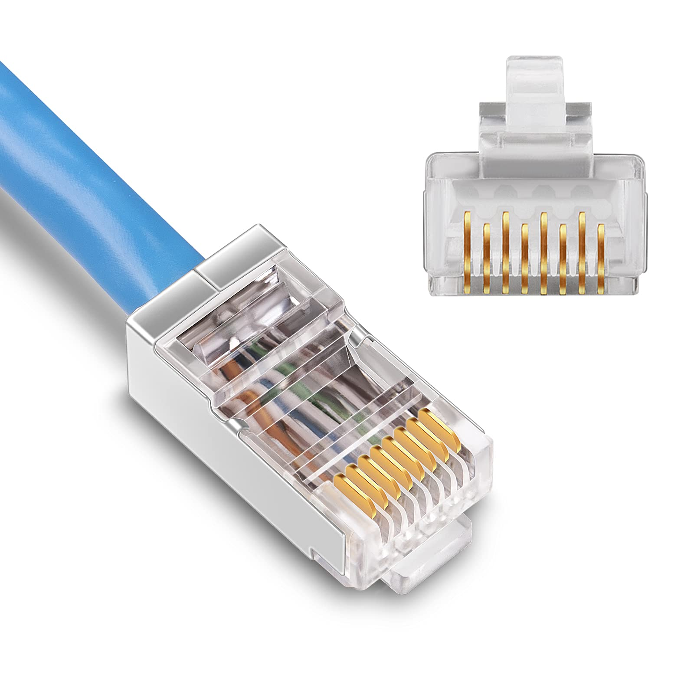
🔹 Used With
- Cat5 / Cat6 / Cat6a cables
- PCs
- Switches
- Routers
RJ-45 Ethernet Patch Cable
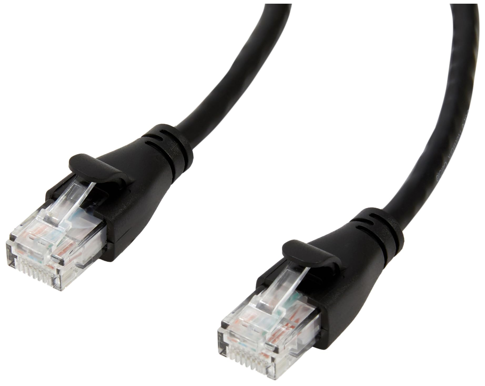
🔹 Wiring Standards (Extra Knowledge)
- T568A
- T568B (most common)
RJ-45 Pinout (T568A)
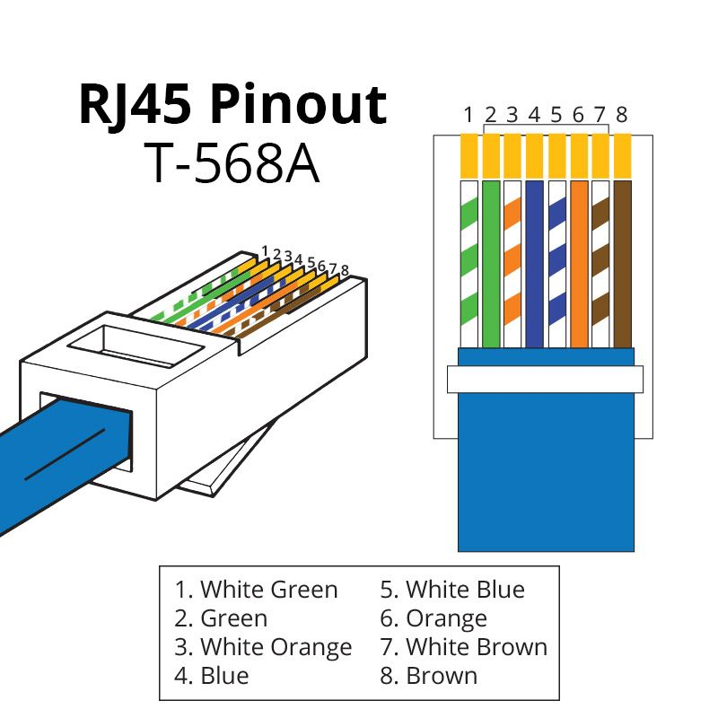
🔹 Simple Example
PC ── RJ-45 ── Switch ── RJ-45 ── Router
RJ-45 = Ethernet connector
8 pins = LAN cable
T568B = most common
RJ-11 Connector (Telephone)
RJ-11 = Standard connector used for telephone lines
2️⃣ RJ-11 Connector (TELEPHONE)
An RJ-11 connector is mainly used for telephone and DSL connections.
- Has 4 or 6 pins
- Smaller in size than RJ-45
RJ-11 Telephone Connector
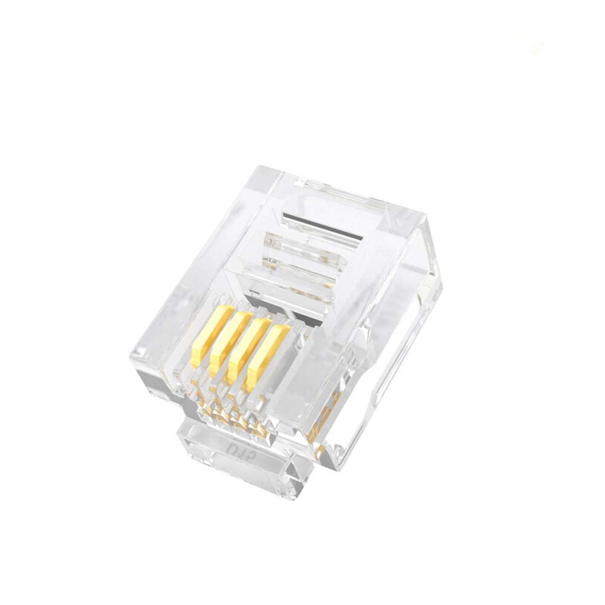
🔹 Used With
- Landline phones
- DSL modem phone line
RJ-11 vs RJ-45

🔹 Comparison (Exam Favorite)
| Feature | RJ-45 | RJ-11 |
|---|---|---|
| Pins | 8 | 4 / 6 |
| Use | Ethernet | Telephone |
| Size | Bigger | Smaller |
RJ-45 = Internet / LAN
RJ-11 = Telephone / DSL
RJ-11 always smaller
Coaxial Connector
Coaxial Connectors are used to connect coaxial cables for TV, internet, and surveillance systems
3️⃣ Coaxial Connector
A coaxial connector is used with coaxial cables to provide stable signal transmission, especially for video and broadband signals.
🔹 Types of Coaxial Connectors
| Type | Used For |
|---|---|
| BNC | CCTV cameras, old Ethernet networks |
| F-Type | Cable TV, cable modem, broadband internet |
BNC Coaxial Connector
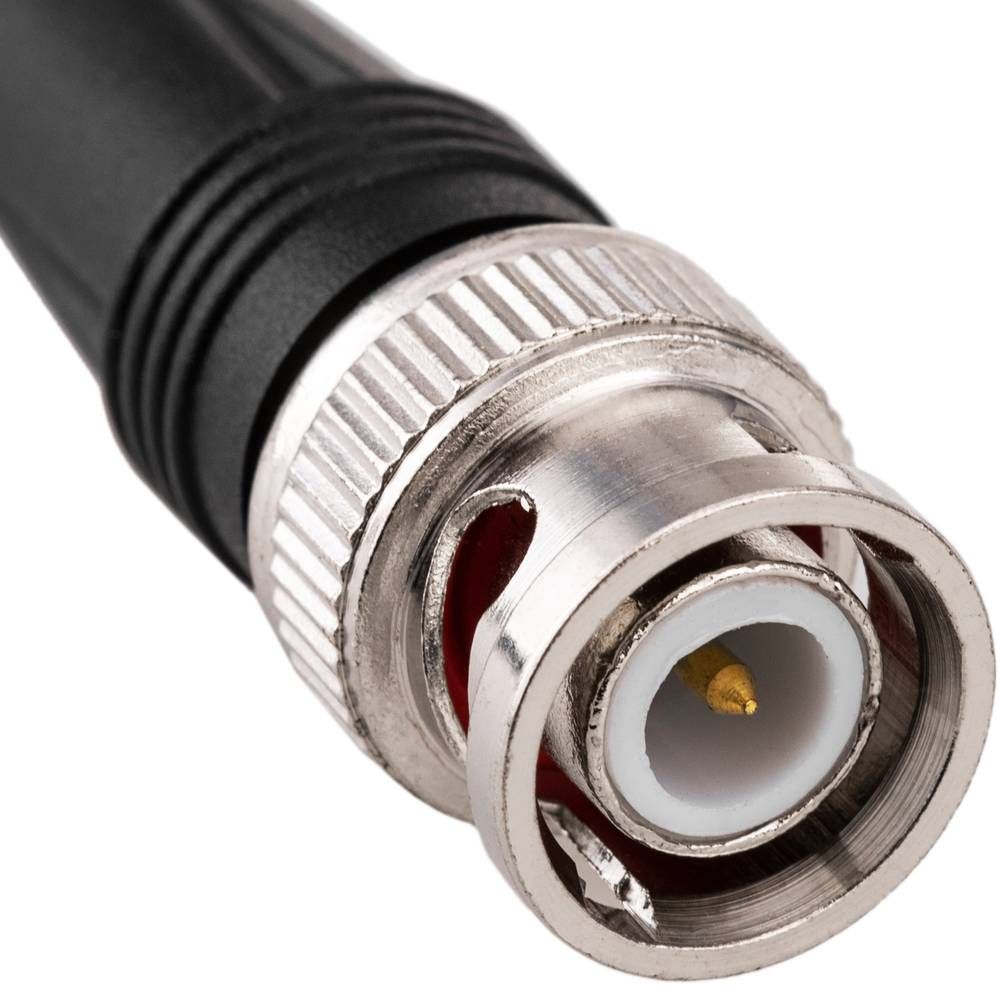
F-Type Coaxial Connector
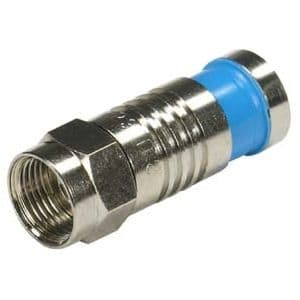
🔹 Used With
- Coaxial cables
- Television (Cable TV)
- Cable internet / modem
- CCTV surveillance systems
Coaxial Connectors in Networking
BNC = CCTV & old networks
F-Type = TV & cable internet
Coax connector = round metal pin
Fiber Optic Connectors
Fiber optic connectors connect fiber cables to networking devices for high-speed, long-distance communication
4️⃣ Fiber Optic Connectors
Fiber optic connectors are used to terminate fiber optic cables and connect them to devices like switches, routers, and ISP equipment.
🔹 Common Types of Fiber Optic Connectors
| Connector | Shape | Use |
|---|---|---|
| SC | Square | Networks |
| LC | Small | Data centers |
| ST | Round | Old fiber networks |
| FC | Threaded | Telecom environments |
Fiber Optic Connector Types
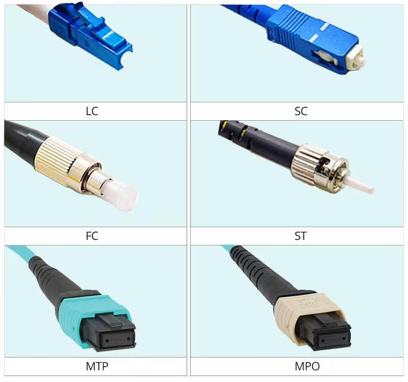
🔹 Used With
- Fiber optic cables
- Network switches
- Routers
- ISP equipment
SC = Square connector
LC = Small, data centers
ST = Old, round connector
FC = Threaded, telecom